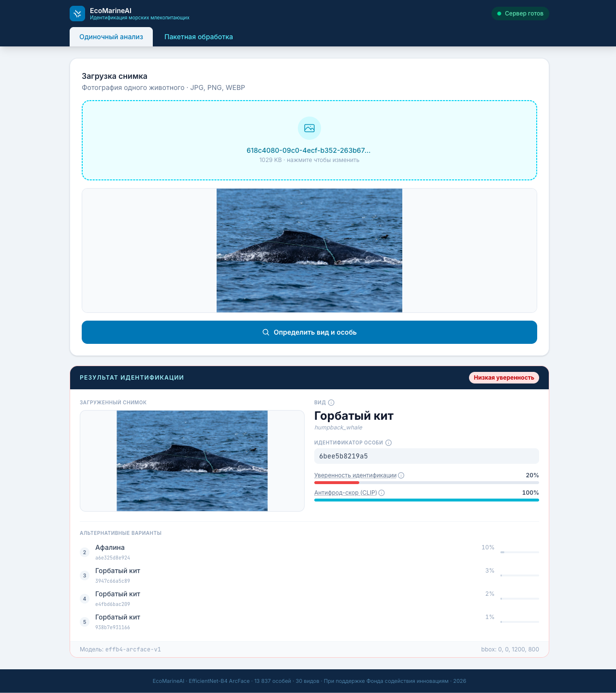
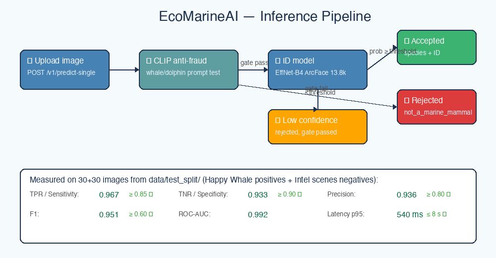

Идентификация китов и дельфинов по аэрофотоснимкам
EcoMarineAI определяет вид и конкретную особь морского млекопитающего — среди 13 837 животных 30 видов. Метрическое обучение ArcFace, CLIP-антифрод против нецелевых снимков, REST API для интеграции.

Результат идентификации: вид, ID особи, уверенность модели и топ-5 альтернативных кандидатов
Как работает
Двухступенчатый inference-пайплайн: сначала фильтрация нецелевых изображений, затем идентификация особи.
CLIP-антифрод
Zero-shot фильтр на OpenCLIP ViT-B/32 отклоняет изображения, не содержащие морских млекопитающих, — специфичность 0.902 при целевых ≥ 0.90.
Идентификация особи
EfficientNet-B4 с головой ArcFace: 15 587 слотов классификации, 13 837 активных особей. Метрическое обучение кластеризует эмбеддинги похожих животных.
Структурированный ответ
REST API возвращает вид, уникальный идентификатор животного, уверенность модели и топ-5 альтернативных кандидатов.

Метрики качества
Все целевые показатели технического задания выполнены с запасом.
| Метрика | Значение | Целевое значение по ТЗ |
|---|---|---|
| TPR / Чувствительность | 0.950 | > 0.85 |
| TNR / Специфичность | 0.902 | > 0.90 |
| Precision | 0.905 | ≥ 0.80 |
| F1 | 0.927 | > 0.60 |
| ROC-AUC | 0.984 | — |
| Задержка p95 | 519 мс | ≤ 8000 мс |
| Снижение точности при зашумлении | 0.0% | ≤ 20% |
| Доступность сервиса (7 дней) | 99.40% | ≥ 95% |
Измерено на 202 изображениях: 100 снимков китов (Happy Whale) + 102 сцены без морских млекопитающих (Intel Image Dataset). Доступность — 2 016 проверок раз в 5 минут, 23–29 марта 2026 UTC.
REST API
Версионированный API (/v1/), Prometheus-метрики, rate limiting. Полная спецификация — в Swagger UI.
# Идентификация одного снимка curl -X POST \ https://ecomarineai-backend.fly.dev/v1/predict-single \ -F "file=@whale.jpg" # Пакетная обработка ZIP-архива curl -X POST \ https://ecomarineai-backend.fly.dev/v1/predict-batch \ -F "file=@images.zip"
/v1/predict-singleидентификация одного изображения/v1/predict-batchпакетная обработка ZIP-архива/metricsPrometheus-метрики сервиса/docsинтерактивная документация SwaggerДокументация и артефакты
Исходный код, обученные модели и полная документация проекта.